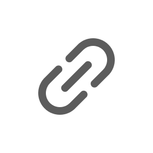

Offer evaluation
Overview
In 2022, following significant workforce restructuring events in the U.S job market, many Blind users were leveraging the platform to explore new opportunities and compare them through the perspectives of other users. Blind introduced a new input format through these opportunities, enabling users to conveniently compare job offers and communicate. This enhancement aimed to diversify the content on the app and gather user data effectively.
Existing Blind users had the experience of directly entering each offer comparison item and regarded
it as a natural part of the process. By proactively providing a feature that directly addressed
users' cumbersome experiences, I aimed to strengthen the connection between Blind and its users.
Blind /Multiple Offers :)
After the large-scale restructuring events in the U.S, 24% of all posts on Blind were found to be associated with 'Offer evaluation.' Among these, a goal was set to generate 40% of posts in the new input format, facilitated by the introduction of a novel input format. Additionally, the expectation was to increase content production by providing a more convenient input format.
SRP: Offer evaluation
Structure
Given the rapidly increasing demand for this feature in response to the U.S market conditions, the focus was on selectively launching new features quickly by identifying the minimum necessary functionalities for users. Options, taking into account not only the financial compensation of new jobs but also factors like growth potential and accessibility, were added to enable users to compare and communicate about Offers from various perspectives. Additionally, a 'History' feature was introduced to provide a convenience function, allowing users to quickly retrieve data in various topics of interest.
Composer: Add a new offer
Post: Offer evaluation
Web ver.
Entry point
To ensure users quickly recognize the entry point of the newly added features in Composer, I conducted rapid and diverse tests on a UI that stands out without interfering with the post creation process. The new entry point had to be intuitive, allowing users to easily notice and use it even without auxiliary guide UI elements such as 'Tool tip' or 'Coach mark.' I quickly tested three different approaches, and as a result, I decided to implement the FAB (Floating Action Button) for providing the most powerful accessibility.
Visual variants comparison
Performance
This project successfully achieved a conversion of 'Offer evaluation' related posts to the new input
format, surpassing the initial goal by 24%. Unexpectedly, it was observed that users not only
utilized this feature for comparison purposes but also for assessing their current salary levels.
Following the launch of the new input format, there was a notable increase of 32% in 'Offer
evaluation' related posts.
Blind
/Offer evaluation
Offer evaluation
Company: Blind
Role: Product design
Responsibilities: Led the expedited product release by taking into account the
requirements and feedback from the U.S team, as well as considering the resources of the KR dev
team.
Tools: Figma, Mixpanel
Duration: Teamwork, 2022 - 2023
